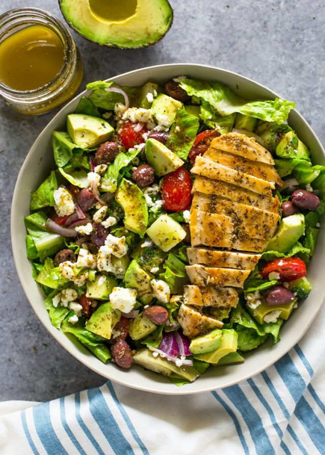

Chicken Salad

The classic Chicken Salad, made with roasted chicken, lettuce, and your choice of fruits and vegetables.
Ingredients
- Chicken
- Lettuce
- Assorted Fruits & vegetables
Steps
- Grill chicken.
- Place lettuce on plate or in bowl.
- Place cooked chicken and chosen fruits & veggies on lettuce.
Back to Recipes